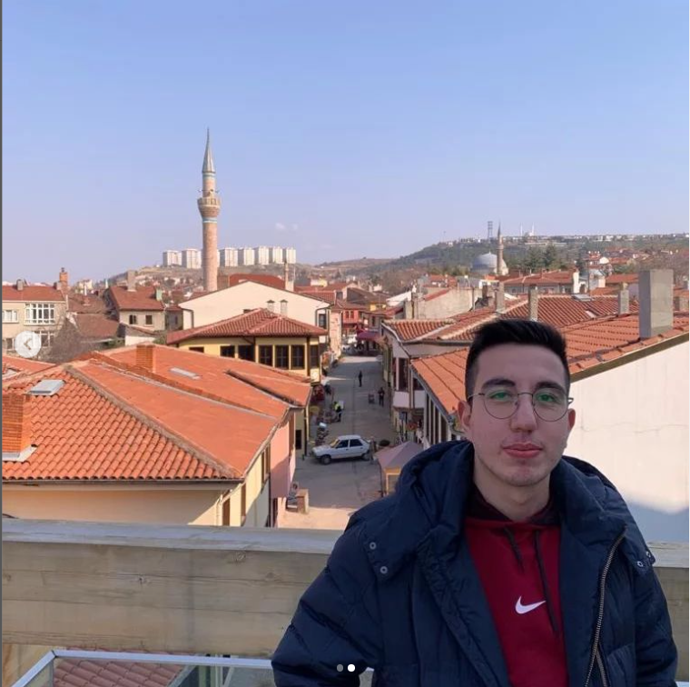

EĞİTİM BİLGİLERİM
| ŞEHRİM
| İLGİ ALANLARIM
| İLETİŞİM |
Hakkımda
Merhaba Ben Gürkan.20 yaşındayım. 24 Eylül 2001'de tarihinde Bursa'da doğdum.Doğduğum şehirde yaşıyorum.Sakarya Üniversitesi Bilgisayar Mühendisliği Bölümü 1.Sınıf Öğrencisiyim.
Hobilerim

Genel olarak bilgisayar oyunlarını oynamayı ve Dizi/Film izlemeyi severim.Bunların dışında futbol ve basketbol oynamayı seviyorum.